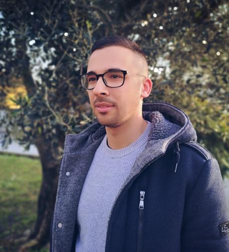

Marco Campion
Postdoctoral Researcher
INRIA & École Normale Supérieure | Université PSL, Paris, France
Research Interests
My area of research revolves around the field of formal methods.
In particular, my main area of expertise is Abstract Interpretation which provides
a strong mathematical framework for approximating undecidable or highly complex problems. I am also interested in foundational aspects of computation, with particular attention to the relation between intensional and extensional properties of code.
Research topics:
- Static Program Analysis
- Abstract Interpretation
- Program Verification
- Computability and Formal Languages
Publications
- Marco Campion, Caterina Urban, Mila Dalla Preda, Roberto Giacobazzi. A Formal Framework to Measure the Incompleteness in Abstract Interpretation. To appear in 30th Static Analysis Symposium (SAS 2023)
- Marco Campion, Mila Dalla Preda, Roberto Giacobazzi. On the Properties of Partial Completeness in Abstract Interpretation. In 23rd Italian Conference on Theoretical Computer Science (ICTCS 2022)
- Marco Campion, Mila Dalla Preda, Roberto Giacobazzi. Partial (In)Completeness in Abstract Interpretation: Limiting the Imprecision in Program Analysis. In 49th ACM SIGPLAN Symposium on Principles of Programming Languages (POPL 2022)
- Marco Campion, Mila Dalla Preda, Roberto Giacobazzi. Learning Metamorphic Malware Signatures from Samples. In Journal of Computer Virology and Hacking Techniques, Volume 17, pages 167-183, 2021
- Marco Campion, Mila Dalla Preda, Roberto Giacobazzi. Abstract Interpretation of Indexed Grammars. In 26th Static Analysis Symposium (SAS 2019)
Events I am involved in
- Member of the Program Committee of the Workshop on Attacks and Software Protection (WASP @ESOTERICS 2023)
- Member of the Artifact Evaluation Committee of the 28th Static Analysis Symposium (SAS 2023)
- Member of the Artifact Evaluation Committee of the 50th ACM SIGPLAN Symposium on Principles of Programming Languages (POPL 2023)
- Member of the Artifact Evaluation Committee of the 29th Static Analysis Symposium (SAS 2022)
- Member of the Artifact Evaluation Committee of the 28th Static Analysis Symposium (SAS 2021)
- Invited talk at The IMDEA Software Institute (Madrid, Spain, May 2018), Title of the talk: "Indexed Grammars Abstractions and Relations with other Formal Languages"
Career
- Ph.D. in Computer Science, University of Verona (Italy) under the supervision of Prof. Roberto Giacobazzi (October 2021). Ph.D. Thesis Title: "Partial (In)Completeness in Abstract Interpretation"
- Master Degree in Computer Science, University of Verona (Italy) under the supervision of Prof. Mila Dalla Preda (March 2017). Master Thesis Title: "Learning Rewriting Rules from Widening Automata"
- Bachelor Degree in Computer Science, University of Verona (Italy) under the supervision of Prof. Massimo Merro (March 2014). Bachelor Thesis Title: "Statistical Model Checking of DYMO routing protocol for ad-hoc networks with messages loss"
Teaching and Tutoring
- Organizer and Tutor of "Cyberchallenge 2023", University of Verona (Spring 2023)
- Tutor of "Software Security", University of Verona (Fall 2022)
- Organizer and Tutor of "Cyberchallenge 2022", University of Verona (Spring 2022)
- Tutor of "Software Security", University of Verona (Fall 2021)
- Organizer and Tutor of "Cyberchallenge 2021", University of Verona (Spring 2021)
- Organizer and Tutor of "Cyberchallenge 2020", University of Verona (Spring 2020)
- Tutor of "Programmazione I", University of Verona (Fall 2019-Spring 2020)
- Tutor of "Programmazione I", University of Verona (Fall 2018-Spring 2019)
- Tutor of "Logica", University of Verona (Fall 2017)
Contact
marco.campion@inria.fr